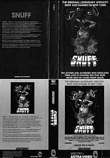

| Жанр | Режиссёры | Продюсеры | Авторы сценария | В главных ролях | Оператор | Композитор | Кинокомпании | Дистрибьютор | Длительность | Бюджет | Страна | Язык | Год |
|---|---|---|---|---|---|---|---|---|---|---|---|---|---|
| Сплэттер | Майкл Финдли, Горацио Фредрикссон, Саймон Начтерн | Джек Брэвман, Алойс Бруммер, Аллан Шеклтон | Майкл Финдли, Эд Келлехер | Маргарита Амучастеги, Лилиана Фернандес Бланко, Ана Карро | Роберта Финдли | Рик Ховард | August Films Selected Pictures | Monarch Releasing Corporation | 80 мин | 30 тыс $ | США | английский | 1976 |
«Снафф» (англ. Snuff) — американский сплэттер 1976 года, снятый режиссёром Майклом Финдли по собственному сценарию. Оператором фильма выступила жена Майкла Роберта Финдли. Съёмкой последней сцены фильма занимался Саймон Начтерн. Картина задумывалась супругами Финдли как эксплуатационный фильм, вдохновлённый убийствами, которые совершила семья Мэнсона в 1969 году. Фильм был снят недалеко от Буэнос-Айреса за 30 тысяч долларов, но так и не вышел на экраны. Он должен был стать первым относительно крупным фильмом с серьёзным сюжетом в карьере четы Финдли, до этого работавших только в жанре сексплотейшн. После завершения съёмок фильм был куплен продюсером Алланом Шеклтоном и «пролежал на полке» более пяти лет. В 1976 году Шеклтон прочитал о якобы существующих снафф-фильмах и решил доснять финальную сцену, имитирующую снафф, чтобы выпустить фильм в прокат. По сюжету фильма, где-то в Южной Америке лидер религиозного культа, по прозвищу Сатана, заставляет девушек-байкеров убивать людей ради себя. Когда сексуальная американская порноактриса Терри Лондон прилетает с продюсером Максом Маршем для съёмок нового фильма, культ преследует её и её друзей, планируя убийства и принесение в жертву её будущего ребёнка. Изначально вокруг фильма велась рекламная кампания для привлечения общественного внимания. В результате окружной прокурор Нью-Йорка провёл расследование и установил, что убийства, показанные в фильме, были инсценировкой. Эта картина способствовала распространению городской легенды о настоящих снафф-фильмах, оказала долговременное влияние на кинематограф и популярную культуру в целом.

Фильм «Снафф» был раскритикован сразу после выхода в прокат, как за рекламную кампанию, вводящую зрителей в заблуждение, так и за низкое качество картины в целом. Ричард Эдер из New York Times назвал фильм «ужасно написанным, отснятым, сыгранным, срежиссированным и дублированным куском гнили, в котором группа дьявольских девушек расправляется с людьми». Также в New York Times Джон Леонард написал, что Маркус Уэлби мог бы улучшить спецэффекты фильма и что финальное «убийство» было менее «несносным», чем аналогичная сцена из «Тела для Франкенштейна» (1973). Спустя годы отзывы остались столь же негативными. Джоэл Харли из HorrorNews.net в своей рецензии на фильм написал: «Если бы не эта концовка и не фурор вокруг неё, „Снафф“ наверняка был бы давно забыт. А так, если не считать дурной славы, фильм получился средненьким». Билл Гиброн из PopMatters дал фильму 3 из 10 звезд, написав: «В отличие от современных кровавых фильмов, которые стремятся к реализму, как при расчленёнке, так и во всех аспектах спецэффектов, „Снафф“ — дешёвка и пошлятина. Хотя легенда о нём живёт... В последние несколько минут фильма на экране никто не умирает. А вот ваше чувство доверчивости...». Адам Тайнер из DVD Talk назвал фильм «практически непригодным для просмотра». Тайнер раскритиковал излишне затянутые сцены, отсутствие напряжения и дублированные диалоги, которые он назвал «сонными, плоскими, безжизненными и вопиюще неумелыми, даже не делающими попыток соответствовать бешено хлопающим губам». Кинокритик Александра Хеллер-Николас утверждала, что, хотя «Снафф», возможно, и не является «лучшим» фильмом 1970-х годов, он, вероятно, наиболее значительный из «худших» фильмов десятилетия. Критик Марк Маккенна, ссылаясь на слова Хеллер-Николас, писал, что «идея часто может быть более мощной, чем её воплощение». Маккенна утверждал, что в фильме, начиная с самых первых сцен, где женщины-хиппи едут на байке под саундтрек, имитирующий песню группы Steppenwolf «Born to Be Wild», заметно стилистическое влияние молодёжного фильма «Беспечный ездок» (1969), да и в дальнейшем у «Снаффа» можно найти параллели с этой картиной, которая сыграла значительную роль в создании байкерского кино. В своём разборе финала британский исследователь медиа Джулиан Петли писал, что сцена «убийства» соответствует классическому голливудскому стилю. Сцена состоит из нескольких склеек с разных камер, и именно этот приём больше всего нарушает ощущение реальности происходящего на экране. Подобным образом звук, который слышен в последние моменты сцены, продолжает звучать даже после того, как фильм закончился, что означает, что этот звук должен был быть записан извне и затем синхронизирован с визуальной дорожкой. Зритель слышит голоса актёров, всё ещё разговаривающих после окончания визуального ряда. Петли утверждает, что данный приём является «невероятно эффективным», но в то же время он является неопровержимым доказательством того, что сцена является смонтированной. Эти проблемы в сочетании с плохим исполнением и некачественными спецэффектами разрушают любое ощущение подлинности фильма.
Вода́ (оксид водорода, гидроксид водорода, химическая формула — H2O) — бинарное неорганическое соединение, молекула которого состоит из двух атомов водорода и одного — кислорода, которые соединены между собой ковалентной связью. При нормальных условиях представляет собой прозрачную жидкость, не имеющую цвета (при малой толщине слоя), запаха и вкуса. В твёрдом состоянии называется льдом (кристаллы льда могут образовывать снег или иней), а в газообразном — водяным паром. Вода также может существовать в виде жидких кристаллов (на гидрофильных поверхностях).
Квадра́т числа x — результат умножения числа на себя: x ⋅ x. Обозначение: x2.